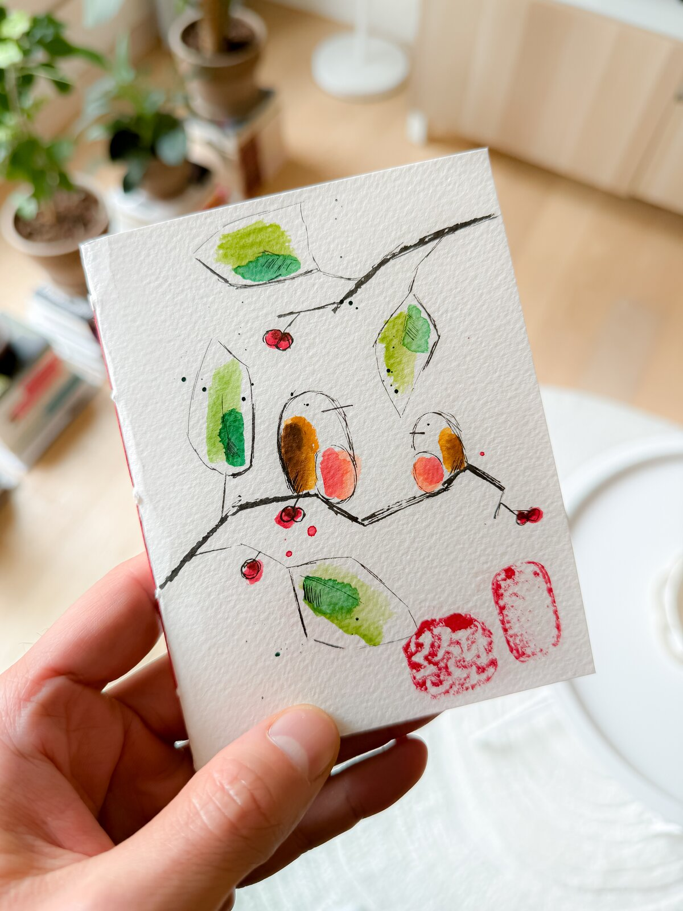
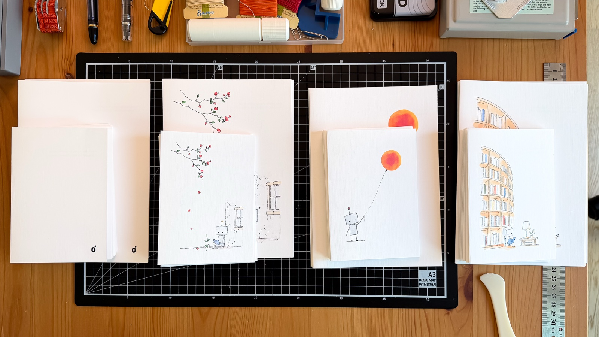
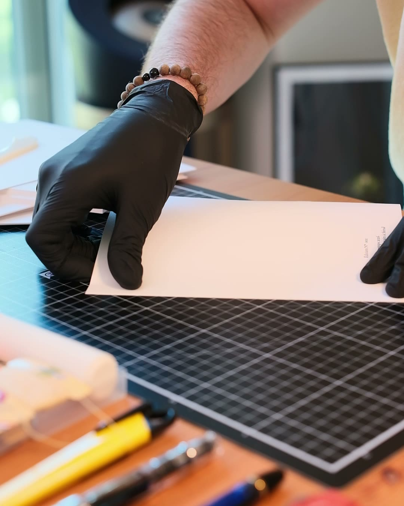
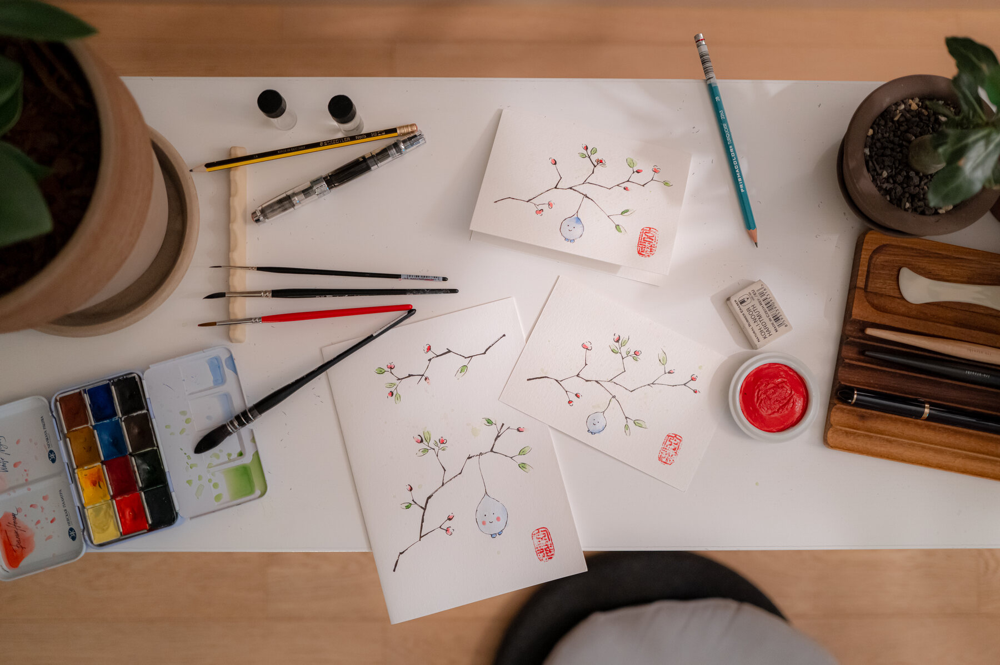
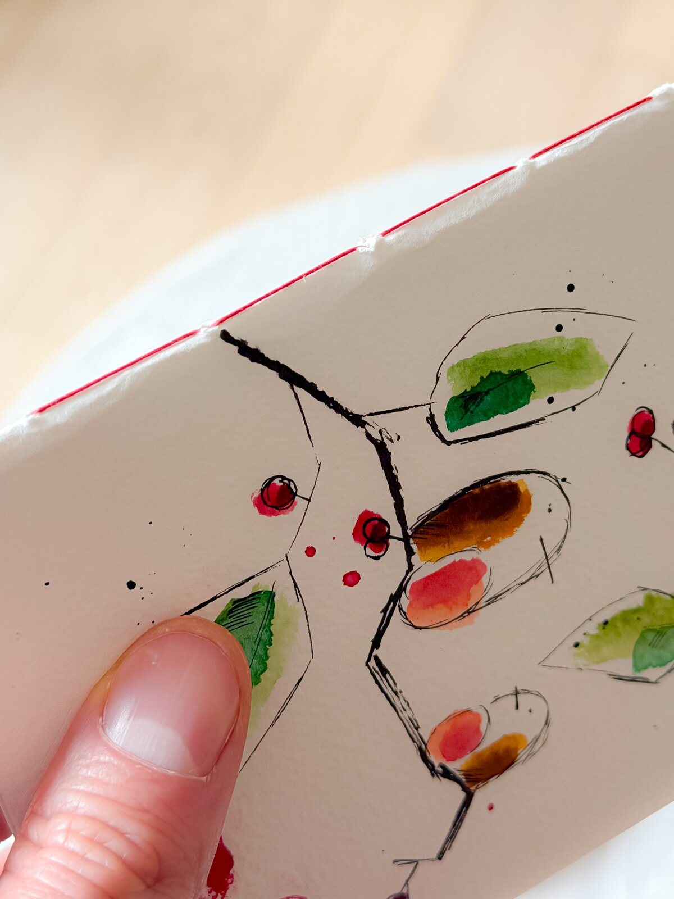

Carnet de voyage.
Reliez le carnet qui voyagera avec vous, à l’atelier français de Séoul. Couverture, fil, pages, colophon, tout de votre main. Puis le voyage le remplit : notes, croquis, aquarelle, billets collés.

Repartir avec le carnet qui voyagera avec vous.
Vous pliez un carnet A5, le cousez avec un fil dont vous choisissez la couleur, et faites de la couverture Canson un souvenir du voyage : une ligne à l’encre, un lavis, une date. Le papier d’écriture et le fil ciré viennent de la même famille que les éditions Studio Monjo.
Les pages sont faites pour tenir un voyage entier : écrire, croquer, poser un lavis léger, coller billets et tampons. Aucune expérience nécessaire ; une carte-guide lignée pour qui la veut, et la dernière page signée comme une édition : façonné à la main à Séoul.
Les matières d’abord.
Vous apprenez pourquoi chaque matière est là : ce que le papier fait à l’encre, pourquoi le fil est ciré, et comment l’encre et l’aquarelle se posent ensemble sur une couverture.
Pliez des feuilles de 105 g choisies pour l’écriture, assez épaisses pour l’encre, un lavis léger d’aquarelle et un billet collé.
Cousez avec un fil de lin ciré pour une reliure ferme, visible, honnête dans sa façon de tenir l’objet.
Une ligne à l’encre, un lavis de couleur : la couverture devient la vôtre.

Comment naît un carnet ici.
Chaque édition commence en peinture, devient une couverture Canson imprimée, et attend sur cette table en feuilles à plat : pliées, assemblées, cousues avec leur couleur de fil, puis signées et emballées.
Votre carnet suit le même chemin. Rien n’est préparé d’avance ; vous partez de la feuille à plat, exactement là où chaque carnet d’ici commence.
Deux heures et demie, votre carnet.
-

STEP 01L’histoire et le papier
Le thé d’abord. Le cahier où Monjodan a appris à écrire, pourquoi un relieur français travaille à Séoul, et les lettres de Robey sur la table. Puis le papier de 105 g entre vos mains.
-

STEP 02La couverture d’abord
Une ligne à l’encre, un lavis d’aquarelle, la date du voyage. La feuille Canson qui enveloppera votre carnet devient votre premier souvenir de Séoul.
-
STEP 03
Plier et coudre
Pliez le papier, alignez-le, cousez-le autour de votre couverture avec le fil que vous choisissez. Rouge, orangé, marine, noir.
-

STEP 04Signer, dater, emporter
Signez la dernière page, ajoutez la date et le lieu. Un exemplaire unique, façonné à la main à Séoul, par vous. Il repart enveloppé de papier translucide.